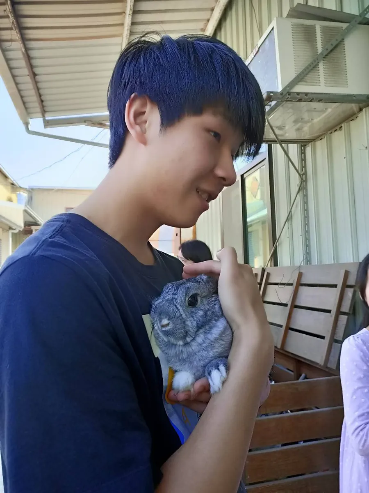
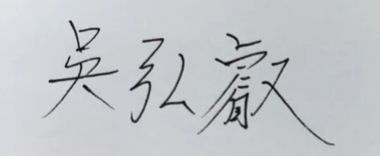
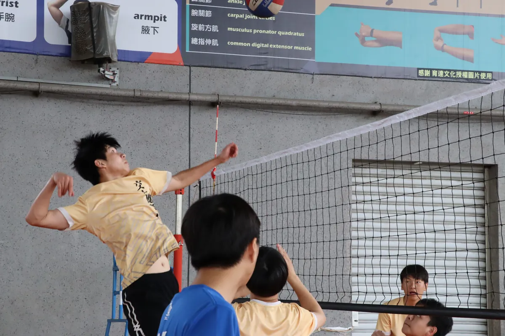

About Me
A personal introduction — my interests and hobbies.
-
Who Am I


#RabbitLover #ENTJ #VolleyballLover #Singing
#NotGreatAtMath #FromTaichung #CountryBoy
Hi, welcome to my personal introduction page.
I hope the following content will help you get to know me better! -
Volleyball
Since junior high, playing volleyball has been my favorite pastime.
I served as the vice-captain of the Department of Applied Mathematics volleyball team in my second year and became the captain in my third year.

Singing
My father taught us how to sing from a young age, helping me develop a good voice.
Signature Songs:- Richie Jen - "Heartbroken Pacific"
- Phil Chang - "The Rain Keeps Falling"
- Dave Wong - "Her Silhouette"
- Eason Chan - "Transfer of Love"
I'm also learning to sing newer songs and am currently best at performing Ideal Idiot - "I Love You Not Because It's Sunny"!